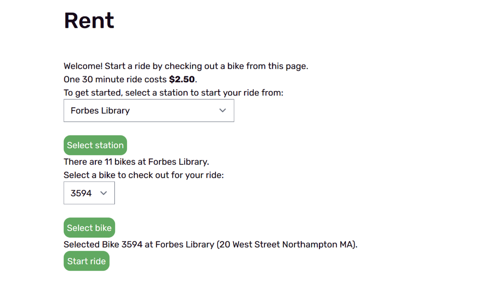
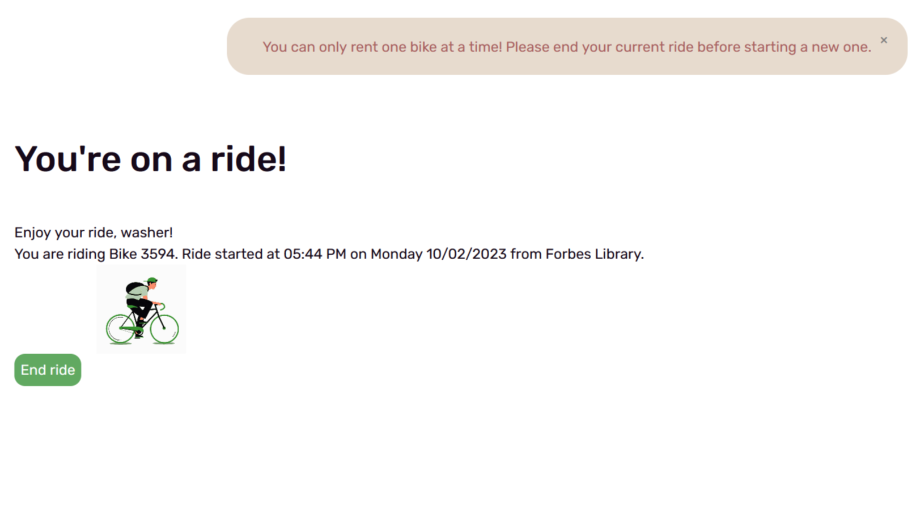
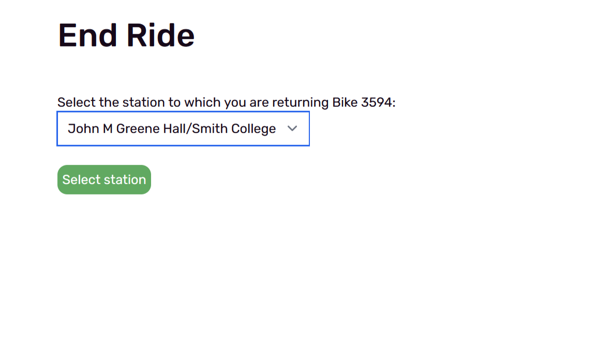

Hi there! I'm Asher Uman, a software engineer with experience in web/game dev. Feel free to browse my portfolio to learn more about me and check out some of the projects I've worked on!
Role: Full-stack software engineer
Tools used: Ruby on Rails, MySQL, Git
Team Size: 5
Timeline: 8 weeks
ValetBike is a web application that simulates a bike-rental service, created from scratch as a Software Engineering course project. I was the main contributer for the user account and bike rental functionality. This required managing and connecting multiple MySQL tables, as well as creating the relevant webpages with Ruby on Rails and HTML.
All the code and more information is available on the project Github repository, and you can also view the live website.
The goal of ValetBike was to create a minimum viable product from scratch in 8 weeks. Additionally, no one on the team had significant experience with MySQL or Ruby on Rails prior to the start of development. One of the main challenges I faced was having to quickly figure out how to implement the basics of the bike rental system. A key aspect of this was creating and updating the rides database.
When a logged-in user goes to the "Rent" page, they can select a station to rent a bike from, bringing up another dropdown to select a bike from that station. If they access this page by selecting a bike and station from the map page, this information is autofilled for them.
Selecting "Start ride" will create a new row in the Rides table, storing a variety of information about the ride.
class Ride < ApplicationRecords
validates_presence_of :start_station_id,
:user_id,
:bike_id,
:start_time
:identifier
belongs_to :user, class_name: :User, foreign_key: :user_id
belongs_to :bike, class_name: :Bike, foreign_key: :bike_id
belongs_to :start_station, class_name: :Station, foreign_key: :start_station_id
belongs_to :end_station, class_name: :Station, foreign_key: :end_station_id
endUsers are then redirected to the page below, and unable to return to the "Rent" page until they choose to end their ride, which they can do through either this page, or by accessing their ride history on the "My Account" page. Users are redirected back to this page any time they click on "Rent" in the navbar while on a ride.
 if !@mostRecentRide.end_time
@chosenBike = Bike.find_by(id: @mostRecentRide.bike_id)
redirect_to action: "update", id: @chosenBike.identifier
flash[:alert] = "You can only rent one bike at a time! Please end your current ride before starting a new one."
end
Ending a ride passes the rides identifier* to the edit method, and brings up the "End Ride" page, prompting the user to choose a station to return their rental bike to.
def edit
# the ride is accessed through both filtering for rides from the current user and finding the ride identifier
@ride = Ride.where(user_id: current_user.id).find_by(identifier: params[:id])
@bike = Bike.find(@ride.bike_id)
@stations = Station.all.order(identifier: :asc)
# updates ride attributes once a station has been selected (and if the ride has not already been ended)
if params[:station] && !@ride.end_station_id
@chosenStation = Station.find_by(name: params[:station])
if @chosenStation.docked_bikes.count >= @chosenStation.dock_count
flash[:alert] = "This station is full!"
params.delete :station
else
@ride.update_attribute(:end_station_id, @chosenStation.id)
@ride.update_attribute(:end_time, DateTime.now)
@bike.update_attribute(:current_station, @chosenStation)
@bike.update_attribute(:current_user_id, nil)
end
end
# renders a view that displays some ride data and thanks the user for using the service
render 'endride'
end*To avoid exposing or depending on the auto-incremented ID of the database, rides are given another identifier based on the time they are started. This has a small chance of creating multiple rides with the same identifier, but is still preferable to using the database ID, since any rides that share an identifier would belong to different users.